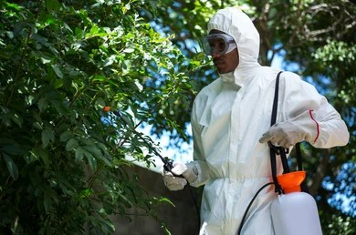
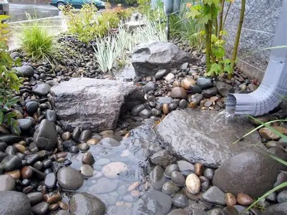
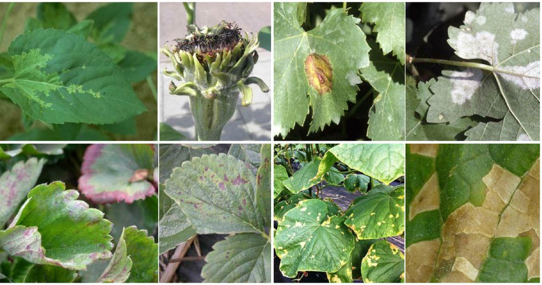

Gardening Solutions
Practical answers to common gardening problems

Natural Pest Control
Use companion planting with marigolds to deter pests, or introduce beneficial insects like ladybugs that prey on harmful pests without chemicals.
Read MoreImproving Soil Quality
Add organic compost regularly and consider soil testing to determine specific nutrient needs. Mix in sand for better drainage if needed.
Read More

Water Conservation
Install drip irrigation systems that deliver water directly to plant roots and use mulch to retain soil moisture between waterings.
Read More

Disease Prevention
Practice crop rotation and ensure proper spacing between plants for air circulation. Remove affected leaves immediately to prevent spread.
Read More